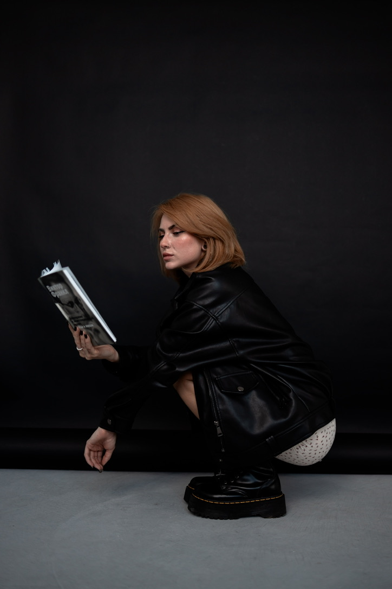
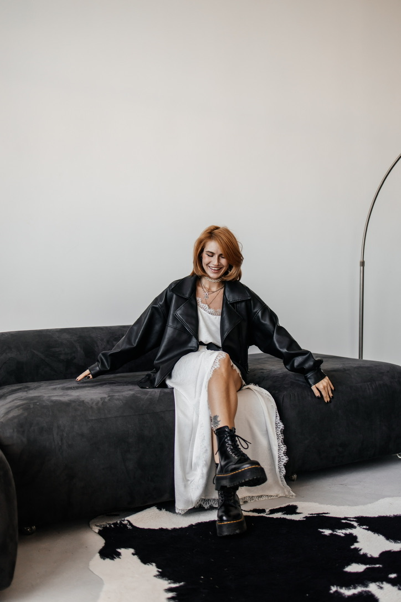

Не инструкция. Инструмент.
Я не раздаю советы и не объясняю, как «правильно». Моя цель — помочь тебе выстроить гармоничные отношения с собой.
Можно прийти, когда головой всё понимаешь, но изменения даются трудно. Можно прийти, когда просто плохо и непонятно, с чего начать. Этого достаточно для начала терапии.


Подходы, в которых я работаю
Моя цель — помочь найти инструмент, который подойдёт именно тебе. Не «ответ на всю жизнь», а способ лучше понимать свои реакции и постепенно выстраивать гармоничные отношения с собой.
РЭПТ
Рационально-эмоционально-поведенческая терапия. Помогает увидеть связь между мыслями и эмоциями, которую в дальнейшем можно использовать как инструмент самопомощи.
Транзактный анализ
Помогает понять глубинные причины своих болезненных реакций, заметить повторяющиеся сценарии и их причины. Помогает выстроить диалог с собой.
Я психотерапевт с высшим медицинским образованием.
Регулярно прохожу супервизии, обучение и личную терапию. Для меня это обязательная часть работы.
Окончила «Гомельский Государственный медицинский университет».
По специальности — врач-психиатр-нарколог / психотерапевт.
Два года проработала в медицине и прошла переподготовку на психолога.
Далее ушла в частную практику.
Позже ушла в частную практику: мне не близок подход к эмоциональным проблемам через ярлыки и ощущение, что с человеком «что-то не так».
Я знаю, что такое депрессия, кризис и панические атаки.
Знаю, что такое не понимать, что ты чувствуешь, и думать, что с тобой что-то не так.
За моей спиной есть опыт расстройства пищевого поведения.
Поэтому уже больше 8 лет я сама нахожусь в личной терапии.
Сначала не «вау». Сначала понятно.
Ты начинаешь замечать свои реакции и внутренний диалог.
меньше внутреннего шума
Не потому что всё исчезло, а потому что стало понятнее, что именно происходит.
меньше самокритики
Начинаешь замечать свой жёсткий внутренний диалог и учишься менять его на более заботливый.
больше опоры
Больше опоры не на чужое мнение, а на собственные желания, ценности, границы и решения.
Стоимость и пакеты
Стоимость одной сессии — 80$ / 7000₽. Можно начать с одной встречи. Если хочется продолжить, есть пакет из 5 сессий.
Одна сессия
60 минут · онлайн · конфиденциально
Частые вопросы
Чего ждать после первой сессии?
На первой встрече мы разбираем, что происходит, формулируем запрос и смотрим, как будем работать. Обычно уже после неё становится понятнее.
Поможет ли психотерапия?
Психотерапия не обещает мгновенного результата. Но она помогает лучше понимать себя, свои реакции и постепенно менять то, что мешает.
Почему берётся предоплата?
Предоплата закрепляет за вами время. Это предмет страховки и дисциплины для специалиста и клиента: мы уважаем и ваше, и моё время. Перенести встречу можно минимум за 24 часа.
Можно просто написать.
Без красивой формулировки. Без идеального запроса. С того места, где ты сейчас.
Написать
Telegram-канал и Instagram
Для записи — личный Telegram. Для мыслей, текстов и наблюдений — канал.
Telegram-канал
@phsyhoNika — тексты, мысли и наблюдения.
Открыть каналInstagram
Reels, stories и жизнь без лишней вылизанности.
Открыть Instagram